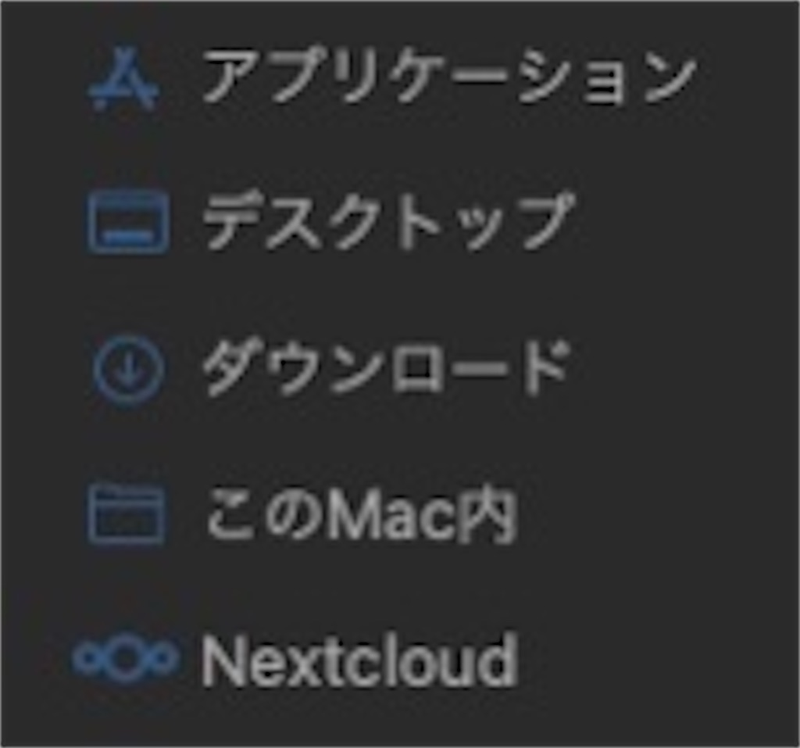

SE辞めた/Kotlin/Python/Hugo/Obsidian
好きなもの: OSS、個人サイト、クロスプラットフォーム
嫌いなもの: サブスク、いかがでしたかブログ、ビッグテックの囲い込み
生息地: mastodon

ええとですね
Macのこのあたりのフォルダ名が日本語である事にすごくムカつくんですよ…

何故ならシェル上で見た実際のフォルダ名は英語だから
表示と実態が異なるのは気持ち悪いのでいただけない
このフォルダ名を英語にするには、.localizedという隠しファイルを消せばいいのですが…
user@Mac-mini ~ % rm /Documents/.localized
rm: /Documents/.localized: No such file or directory
シェル上から消そうとしても「ファイルが無いよ」と言われてしまうんですよね
user@Mac-mini ~ % cd /Documents
user@Mac-mini Documents % rm /.localized
user@Mac-mini Documents %
当該ディレクトリに移動してrmすれば良いということに気づきました。仕様が謎
user@Mac-mini Documents % killall Finder
後はFinderを再起動すればok
これを行わないと反映されないと思います
user@Mac-mini /Applications % rm .localized
override rw-r--r-- root/wheel for .localized?
ちなみに、アプリケーションフォルダはホームフォルダの外にあるので一回確認が出ます
SE辞めた/Kotlin/Python/Hugo/Obsidian
好きなもの: OSS、個人サイト、クロスプラットフォーム
嫌いなもの: サブスク、いかがでしたかブログ、ビッグテックの囲い込み
生息地: mastodon